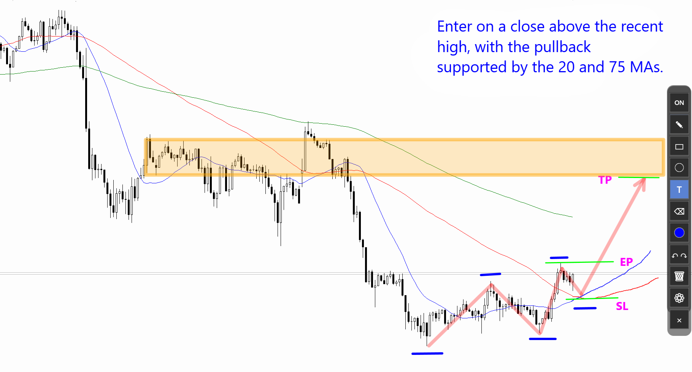
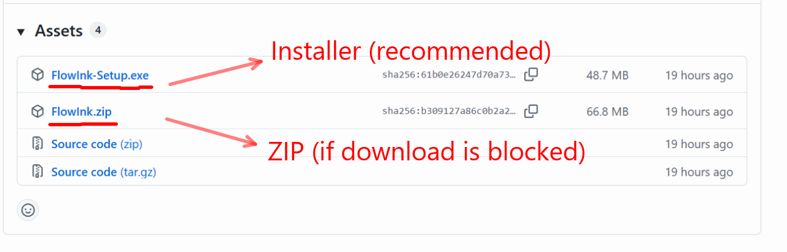
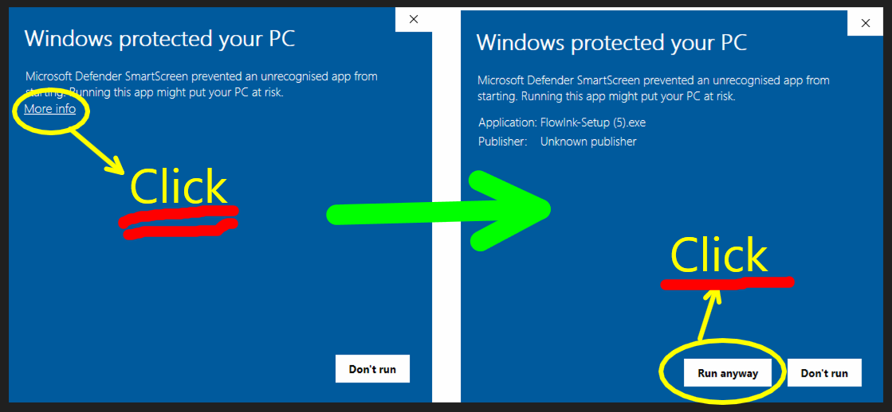
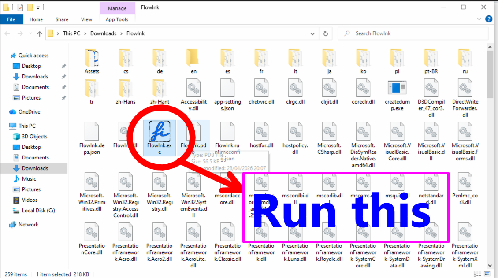

FlowInk
Draw directly on your Windows screen
A lightweight overlay drawing and annotation tool
Features
FlowInk is designed to keep operations simple and make the tools you need immediately available.
Draw directly over your desktop, so explanations and visual checks feel natural.
A minimal UI makes it easy to start using FlowInk without getting lost.
Add labels and notes directly on screen, not just lines and shapes.
Launch it quickly whenever you need to annotate your screen.
Use cases
A quick tool for moments when you need to write directly on screen.
Write directly on the screen you are showing or sharing.
Leave quick notes and visual marks on your screen.
Add lines, arrows, zones, and text to trading charts.
Usage examples


New in v1.5.0: Select, move, and delete drawn objects
Select drawn lines, shapes, and text, then move or delete them.
Toolbar buttons
Left-click selects or runs the main action. Right-click opens related settings, menus, or presets where available.
Left-click to toggle drawing on or off. When drawing is off, you can interact with windows behind FlowInk. The toolbar is collapsed when drawing is off. This is the same action as pressing Ctrl+Alt+T.

Left-click to select the pen tool. Drag with the left mouse button to draw. Hold Shift while dragging to draw a straight line, or Shift+Alt to draw an arrow. Right-click the pen button to open the pen preset popup. Right-click a preset to edit it.
Select drawn lines, rectangles, circles, and text to move, edit, or delete them.
Drag with the left mouse button to draw a rectangle. Right-click the rectangle button to change fill settings and fill transparency.
Drag with the left mouse button to draw an ellipse. Right-click the ellipse button to change fill settings and fill transparency.
Enter text from the keyboard. Press Enter to confirm text, or Shift+Enter to insert a line break. Right-click the text button to open the text settings menu. Use Font settings... to change the font. Click existing text to select it, drag it to move it, and right-click selected text to edit or delete it.

Hold the left mouse button and move the cursor over drawn lines, rectangles, or ellipses to erase them. Text is not erased by the eraser. Right-click to open the eraser width presets. In the preset popup, left-click a width to select it, or right-click a preset and choose EditPresetValue to edit it.
Left-click to open the color selection popup. In the popup, left-click a color to select it, or right-click a color to edit that preset. Right-click the color button to open the color settings menu and edit the current color.

Left-click for Undo. Right-click for Redo.

Clears everything drawn on the screen. Text is also cleared.
Set the global hotkey for toggling drawing on and off. The default is Ctrl+Alt+T.
Exits FlowInk.
Other features
Features that are not tied to toolbar buttons.
- Press Ctrl + Alt + T to toggle drawing on/off. You can change the key combination from the settings button.
- When the pen button is selected, hold Shift to draw a straight line, or Shift + Alt to draw an arrow.
- Use Ctrl-z / Ctrl-Y for Undo / Redo. The history limit is 200 actions.
- While entering text, press Enter to confirm the text. Press Shift+Enter to insert a line break.
- While entering text, hold Ctrl and use the mouse wheel to increase or decrease the font size.
- Drag the empty area of the toolbar to move it.
- Right-click a shape or text to open a menu. From the menu, you can select and move the item, or edit it if it is text.
Try FlowInk
Launch it when you need it and write directly on your screen.
Download it for free and try it out.
How to download
- Click the download button.
- On the page that opens, download one of the following files from “Assets” (the download list).
- FlowInk-Setup.exe (recommended / installer version)
- FlowInk.zip (ZIP version, if the installer download is blocked)
The installer version may be blocked by your browser. In that case, download the ZIP version instead.
Do not download the ZIP file labeled “Source code”.

How to install
FlowInk-Setup.exe (installer version)
- If FlowInk-Setup.exe downloaded successfully, double-click it to start the installer, then follow the installer instructions.
- When you run the installer, Windows may show a SmartScreen protection screen. If it appears, click the details link, then click the run button.

FlowInk.zip (ZIP version)
- Right-click the ZIP file, choose “Extract All”, and run FlowInk.exe from the extracted folder.
- When running FlowInk.exe for the first time, you may see the "Windows protected your PC" screen. In that case, click "More info" and then click "Run anyway".

Why I developed FlowInk
For technical day traders in FX or CFDs, a desktop annotation tool for drawing lines and text over MT4 or MT5 charts is extremely useful. Epic Pen is widely used as a de facto standard among many traders, but it became subscription-based. Even if the price is low, paying forever for a simple drawing tool unless you remember to cancel the subscription did not feel right to me. I looked for an alternative and found a free tool called gInk. gInk is feature-rich, but its behavior felt unstable in my environment. Some recent versions also failed to launch with exceptions, which became frustrating. Because gInk is open source, I looked into it with ChatGPT. ChatGPT suggested that the design was old and that rewriting it in WPF might be better, but attempting to rewrite gInk led to many compile errors and inconsistent code suggestions. So I gave up on improving gInk directly.
Later, I asked ChatGPT again and it suggested that building a new WPF app from scratch would be faster. I tried having it write a simple prototype, and this time it quickly produced a basic screen annotation tool. From there, I gradually added the features I needed.
That tool became FlowInk.

FlowInk was created as a simple alternative to tools such as gInk and Epic Pen for traders who want to write directly on charts.
- Draw straight lines and arrows easily
- Draw filled rectangles for support and resistance zones
- Use transparency so the chart remains visible
- Add text labels
- Save preset line widths and colors
- Move the toolbar by dragging its empty area
For chart annotation, I believe these basic features are enough. FlowInk can also be useful for presentations and online meetings when you want a simple way to explain something visually. Please give it a try.
Feedback / contact
Feedback, bug reports, and feature requests are welcome.
📩 dev.sasaya@gmail.com
𝕏 @m338
wiki: https://github.com/msasa-alt/FlowInk/wiki
- What happened
- Steps to reproduce
- Screenshot, if available
- Your environment, such as Windows version